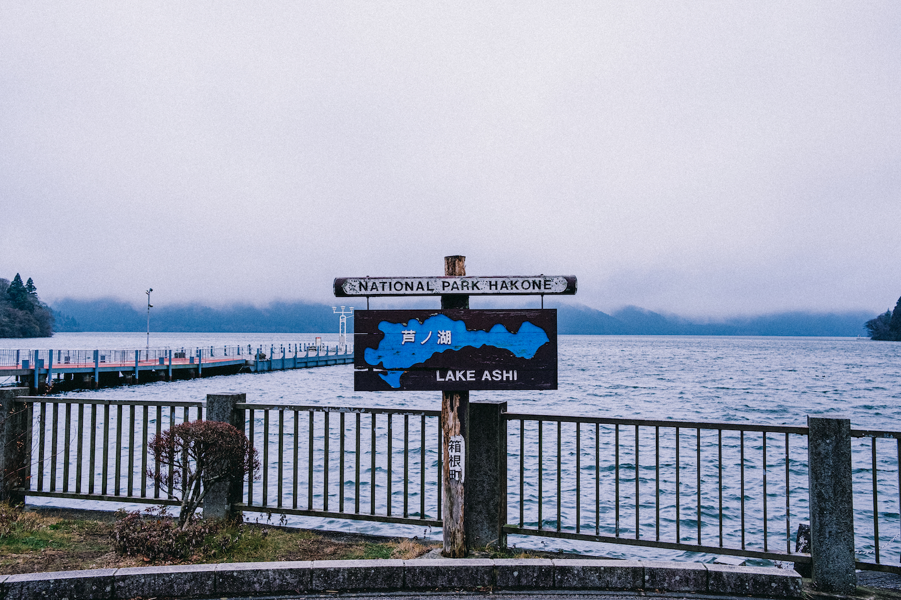

From Far Shores
electronic music, and Tunic.
You know I really, truly did plan to make this a more regular thing but alas, here we are over a year later. The last time I wrote something (on my older website, if we're being pedantic) I was practically a NEET living in Tokyo; fresh off the boat, no job, no friends. Now I'm sat at home back in the UK awaiting visa documents to return to Japan on a long-term basis, job and friends waiting for me; a strange limbo where the prospect of escaping my quiet middle-England hometown is most of what keeps me going.
It's funny, you go away for a year and have this hugely impactful personal experience, and when you come home you quite self-centeredly expect everyone else to be just as changed as you are. I've been back in my hometown for about three weeks now, and things are (for the most part) mostly identical to as they were a year ago, perfectly preserved in this metaphorical peat bog. Granted some friends have moved, some have changed jobs, and some have even broken up, but in a lot of ways it feels like stepping back in time a year. Myself at the beginning of 2023, on the other hand, feels impossibly far away from the person typing this right now.

During my time in the UK I was a pretty habitual game-player, but in an uncharacteristically minimalist (at the time) move the only console I took to Japan with me was my Nintendo Switch; dusted off after a solid 2 years of disuse, it ended up being the platform for my playthrough of Tunic, a title that originally piqued my interest way back with its announcement trailer. Tunic is a fantastic game. Controlling a small anthropomorphised fox in Zelda-esque attire (the titular 'tunic'), on the surface it seems like a fairly innocuous adventure title one can easily imagine the general premise of; collect the important items, save the princess, kill the demon king. But garments and a general lack of hand-holding aside, that's about where the similarities to The Legend of Zelda (1986) stop. There's plenty of games out there made by small and big teams with not a lot more of an ethos than "Hey, you remember this old game, right?"; without saying too much, this disarmingly familiar game has a lot more going on past that in a way that'll make you wish every game required you to break it apart in such a way (I had to break out the pen and paper at multiple points). I feel the need to say that this is not a review of Tunic.
As the game progresses you'll start to understand what these things mean, how the world works, and things become less and less daunting; I couldn't help but think of my own slow accustoming to new social cues and language - where every day the white noise of kanji I'd see on the train was making more and more meaningful sense (the game's world is filled with signage in an unintelligable foreign language, and while deciphering this fictional language isn't essential to the game's completion, slowly uncovering the puzzle of the world is). Tunic isn't really about language, but I couldn't help feel like myself and the deceptively low-poly fox had something in common. It comes heavily recommended by me; if you're into knowledge-based-progression adventure titles like Outer Wilds, I feel it should be top of your list. It ended up being my regular companion for my first few months in Japan; my late-night ritual before Mobile Suit Zeta Gundam took over, my shinkansen time-killer, my distraction from the exhaustion of having to jobsearch for the first time in 5 years.
The one part of Tunic that truly embedded itself in my mind, however, was its music. Composed by couple(?) Lifeformed (Terence Lee) and Janice Kwan, Tunic's score is a home run as far as my music compatibility goes; subdued downtempo, soft solo piano and hazy ambient music that goes a long way in accompanying both the game's atmosphere as well as ultimately my own travels around Japan. I was never into electronic music growing up (too preoccupied with '80s metal) until the absolute triple-whammy of discovering Aphex Twin, Crystal Castles and the score of the game FEZ all within relatively short succession. Selected Ambient Works 85-92 didn't have to do much to get me in the door with electronic music, it wouldn't an exaggeration to say that games music - specifically the smaller independently-made titles - provided even more encouragement, as well as opening me up to the possibility that maybe I could make music on my laptop too.
I have a viscerally palpable memory of being sat on my bed one evening back in 2013 with my piece of shit, borderline-overheating Sony VAIO laptop, listening to Disasterpeace's preview track for the game Hyper Light Drifter's Kickstarter page and thinking "I want to do something like this". And similarly, I'd be lying if I said that it wasn't the music - disarmingly ethereal and dark - that piqued my curiosity for Tunic in the first place. It's early May, and I'm listening to the wistful piano melody of 'To Far Shores' and 'Memories of Memories' as I navigate the length of a crystal-blue ravine in Iya Valley, Tokushima Prefecture. I'm staying near Ōboke, a small town in the already secluded valley from the recommendation of a friend back home who said he visited to "get as far away from Tokyo as possible". Out here there's no metro, miss your bus and the next won't come for an hour, and the winding mountain roads are littered with dilapidated buildings all but reclaimed by nature. The guesthouse I'm staying in has two rooms; one large and vacant, and one small occupied by myself, and despite sitting on the side of the road seldom sound can be heard at night except the gushing of the ravine below. 'Redwood Colonnade's cascading echoes of piano keys sway through the dense new-growth trees that cover the sides of the valley.

(this was more of a 'Tame Impala, Innerspeaker' kind of day)
A few days earlier I'm wandering through the middle of the oddly suburban-sprawl-esque town of Kojima, Okayama Prefecture. The town is famously (in certain circles) the home of artisinal Japanese raw denim, but I've arrived far too late to do any window shopping, and the denim strung across the town's 'Jeans Street' are more akin to a horror film set than a quirky shopping avenue. After a brief but aimless walk I find my way to the only store still open; a sizable ramen diner run by an elderly couple who serve me up the saltiest shio-ramen I've ever eaten. The next day I take the slow train down to Uno and board a ferry to the museum-littered island of Naoshima. A day spent slow-roasting in the sun and pretending to understand modern art later, I'm on the pier talking to my dad back in England. He's excited to hear me recount my trip, short as it's been so far, and in this moment the future feels more malleable than ever.
Five months later and the warm climes of central Japan are replaced with a bitter cold day in mountanous Hakone Prefecture. I started working in August, and this is my first trip outside of Tokyo in months; Japanese summer with all its humidity and absurd temperatures doesn't exactly make you want to get out and travel, especially if you're a pasty white Brit. But it's colder now, and I've made my way from Tokyo, through the mountains and down to Lake Ashi, the picturesque torii gate of Hakone Shrine lapped at its feet by the waters of the lake and Mount Fuji hidden behind the clouds. The low evening sun casts a heavy haze of golden light over the surface of the cold lake, and I sit for a moment listening, as I felt was befitting, to the track 'Neon Shore'. The percussion drops in like a piercing sunbeam, the cascade of synth pads enveloping the fog-sprinkled lake.

(I think the sunset shot is on a not-yet-developed roll of film back in Tokyo)
Again my time spent in Tokyo earlier that year, anxiously stewing in my sharehouse bedroom or out bewildered in the city, felt a world away from there now, left behind somewhere along the road. I was still in unfamiliar territory, be assuredly so. The next day I woke early in my hostel in Odawara and sleepily trudged back to the train station - passing bars of revelers seemingly still drinking from the previous night - before taking the Tozan (mountain-climbing) Railway back into the Hakone mountains, alighting at an all but deserted spot that no other tourists seemed to have reason to get off at. I was meeting a friend of a housemate, this housemate being a nebulously middle-aged Japanese salaryman that, upon hearing I was heading to Hakone for the weekend, informed me an old friend of his organises weekly zazen meditation classes in an old building between Gora and Lake Ashi. He's a friendly guy, not exactly befitting of my stereotypical image of Buddhist practicioners; he plays a bamboo flute he carved himself, and drives a vintage Mini Cooper. All this is to say that by some mundane string of coincidences I found myself sat barefoot in a cold wooden hut in Autumnal Hakone, seated in silence with two elderly gentlemen and wondering if the Josh sat on the plane in March 2023 would've imagined such a thing happening.
The end of the year comes, and I'm back in Hakone. My now former housemate - the same ambiguously-aged salaryman - has driven us high up into the mountains near Gora, and the day's murky weather has lifted in time for us to watch the year's final sunset behind Mount Fuji, now fully visible in the evening glow. I start thinking about time. Another two months pass and I'm in Nikko; it's 9PM, at least -10 degrees outside and I'm bathing in the warm hotspring of my roadside hostel. No one else is there, the receptionist even remarked "Lucky!" when he informed me my multi-person dorm will be empty except me for the night. Facing the pitch-black woods which I would discover the next morning actually formed a steep slope into a ravine, I think to myself, "I've done alright, haven't I". I remember the prospect of returning to the UK feeling like more of an imminent reality day by day, and at that time a kind of 'Cruel Angel's Thesis'-style montage of the last year flashed through my mind. "BREXIT. SHIT TRAINS. CHIPPY."

I'd be lying if I said I was totally studious during my whole year in Tokyo; at least 3 months I was totally disillusioned to the idea of picking up a textbook, and was more preoccupied questioning what I'd even travelled 6,000 miles here for. Nonetheless, I got back on the horse, and managed to find a groove soaking up kanji and grammar. It's almost sad to admit that facing the world with new knowledge only reminds me of some videogame-like knowledge-based progress; coming back to earlier game areas with a newfound information, like you'd inched that slight bit closer to unlocking some kind of game-advancing secret. I no longer wandered around aimlessly looking for local food; I had all my regular train routes down by memory and could suss out any others; I had optimised every run of the day.
That things can just go back to how they were is reassuring and depressing. A year is a long time, and not a lot of time at all. Everything is still here - you can just wake up, the film ends, you turn the game off. The real lesson here is that I should savour this time I have at home before I go back; it might be the last time it's ever this same again. As the plane lifts from the tarmac at Narita Airport, I listen to the now familiar piano melody recontextualised in the closing track 'From Far Shores'.
----------------------------------------
Thanks for reading, folks. I hope to make this a more regular thing when I move back to Tokyo, writing about other media I've been enjoying, places I've been, or even projects I've worked on. If you read all the way to the end and enjoyed it, let me know by sending me a message on Twitter or an email at joshleeaudio@gmail.com! I'd appreciate it.